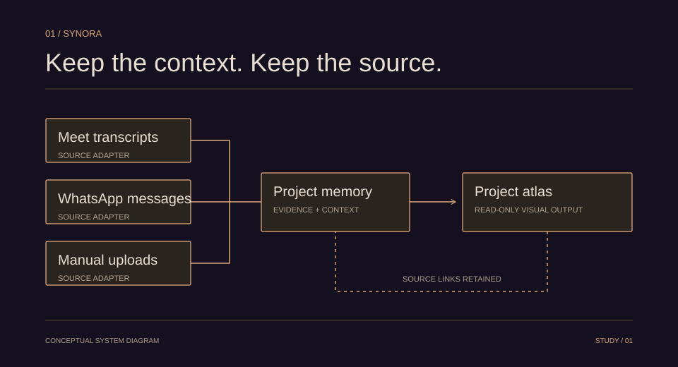

PROJECT MEMORY & PROVENANCE
Synora
Keep the context. Keep the source.
A shared project-memory layer that connects meetings, messages, and uploads to evidence-linked knowledge and a living architecture workspace.
Python / FastAPI / Next.js / SQLAlchemy

Conceptual architectureSource to memoryIllustrative interaction
SourceProject memoryDecision
Meeting note · source retained